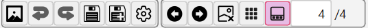
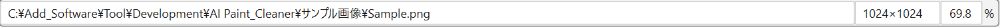
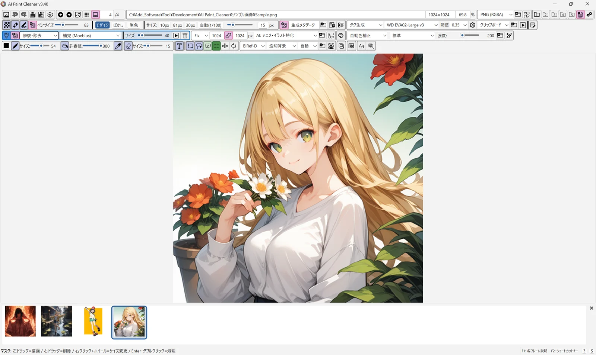
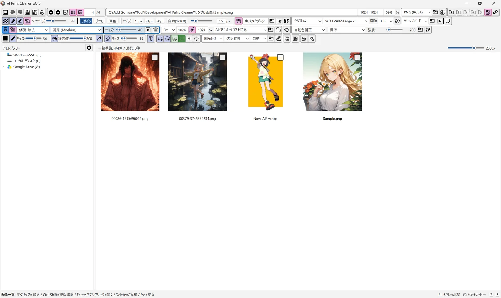

画面と基本操作
画像の開き方と保存、フォルダ内の画像の切り替え、主な設定など、すべての機能に共通する操作です。
ファイル操作とページ操作

123456789101112
| 1開く | 画像を開きます（Ctrl+O）。ドラッグ＆ドロップでも開けます。 |
| 2元に戻す | 直前の操作を取り消します（Ctrl+Z）。 |
| 3やり直す | 取り消した操作をやり直します（Ctrl+Y）。 |
| 4上書き保存 | Ctrl+S。設定で保存前の確認を表示できます。 |
| 5名前を付けて保存 | Ctrl+Shift+S。ファイル名に付ける文字（サフィックス）は設定で変更できます。 |
| 6設定 | 表示・保存・処理などの設定を開きます。 |
| 7前の画像 | ← またはマウスの戻るボタン。 |
| 8次の画像 | → またはマウスの進むボタン。 |
| 9画像を削除 | 表示中の画像をごみ箱へ移します（Delete）。 |
| 10画像一覧 | フォルダ内の画像をグリッド表示します（Ctrl+L）。 |
| 11サムネイルバー | キャンバスの下にサムネイルを並べます。 |
| 12画像番号 | 番号を入力して Enter でその画像へ移動します。 |
画像情報

123
| 1ファイル名 | 開いている画像の名前。設定でフルパス表示に切り替えられます。 |
| 2画像サイズ | 幅×高さ（px）。 |
| 3表示倍率 | キャンバスの拡大率（%）。数値を入力して変更できます。 |
サムネイルバーと画像一覧

クリックで画像を切り替えます。右上の × で閉じます。

左クリックで選択、Ctrl／Shift で複数選択、Enter／ダブルクリックで開く、Delete でごみ箱、Esc で戻ります。右上のスライダーで表示サイズを変更できます。
- 設定で「グリッド表示時にフォルダツリーを表示する」をONにすると、一覧の左にフォルダツリーが出ます（ダブルクリックで移動）。
- 一覧の右クリックメニューから、全選択・選択反転・パスのコピー・まとめてごみ箱へ移動ができます。
主な設定項目
左上の歯車ボタンから開きます。
| 分類 | 主な項目 |
|---|---|
| 表示 | 表示言語、外観（ライト／ダーク）、フルパス表示、原寸優先表示、ツールの表示／非表示、選択中ツールの強調表示 |
| 保存 | JPEG／WebP品質、PNG圧縮レベル、PDF作成方法、名前を付けて保存のサフィックス、上書き確認、画像切替時の自動保存 |
| 描画 | マスク透明度、モザイクのサイズプリセット・境界ぼかし・右クリック差分置換、透明部分の表示色、ペンタブレットの安定性優先 |
| 処理 | 処理デバイス、GPUモデルの保持方法、LaMa処理範囲、AI自動マスク（SAM2）、差分置換の参照方法 |
| モデル | インペイントモデル・背景除去モデル・AI補正プリセットの表示／非表示、タグ・説明生成モデルの保存場所 |
| ショートカット | キーボードショートカットの変更（マウス操作は固定） |
| その他 | 起動時のアップデート確認、最大化して起動、確認メッセージの省略、Eagle連携、ログ出力 |
ショートカット一覧
キーボードの割り当ては設定の「ショートカット」で変更できます。以下は初期値です。
| 操作 | キー／マウス | 使える場面 |
|---|---|---|
| 開く／上書き保存／名前を付けて保存 | Ctrl+O / Ctrl+S / Ctrl+Shift+S | |
| 元に戻す／やり直す | Ctrl+Z / Ctrl+Y | |
| 前／次の画像 | ← / →、戻る／進むボタン | |
| 画像を削除 | Delete | |
| 画像一覧の表示／非表示 | Ctrl+L | |
| 選別フォルダへ移動／コピー | 1〜5 | 選別フォルダ登録時 |
| 選別フォルダを開く | Ctrl+1〜5 | 選別フォルダ登録時 |
| 表示ツールの切り替え | ↑ / ↓、右クリック＋戻る／進む | |
| 全体表示／100%表示 | Alt+0 / Ctrl+0 | |
| コピー／貼り付け／切り取り | Ctrl+C / Ctrl+V / Ctrl+X | 選択範囲があるとき |
| 縦／横方向に削除 | Ctrl+Alt+V / Ctrl+Alt+H | 選択範囲があるとき |
| 縦／横方向に拡張 | Ctrl+Shift+V / Ctrl+Shift+H | 選択範囲があるとき |
| インペイントのカテゴリ切替 | Ctrl+↑ / ↓、左クリック＋戻る／進む | マスクツール選択時 |
| カテゴリ内のモデル切替 | Ctrl+Shift+↑ / ↓ | マスクツール選択時 |
| マスク範囲の拡大／縮小 | Shift＋ホイール | マスク上にカーソルがあるとき |
| AI選択でマスクを追加／除去 | Shift＋左クリック / Shift＋右クリック | AI自動マスクON時 |
| モザイクのサイズ増減 | , / . | モザイクツール使用時 |
| モザイクのサイズプリセット切替 | Shift+, / Shift+. | モザイクツール使用時 |
| モザイクの種類切替 | M / Shift+M | モザイクツール使用時 |
| 差分置換の参照画像を表示 | Alt+R（押している間） | 差分置換／モザイクツール使用時 |
| 差分置換の参照先設定 | Ctrl+R | 差分置換／モザイクツール使用時 |
| AutoMosaicのPreview画像を表示 | Alt+P（押している間） | プレビュー表示中 |
| 各フレーム説明／ショートカット一覧 | F1 / F2 |